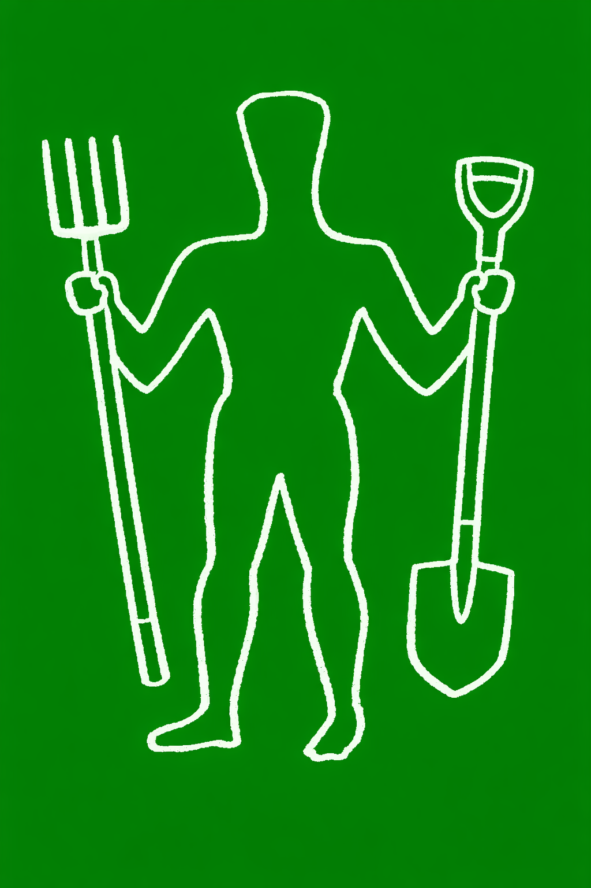

Chalk soil in the South Downs

Much of the South Downs is formed from chalk, so gardens in East Dean and Friston often have alkaline, free-draining soil that can become very dry during summer. In some areas the soil may also be shallow or stony, particularly on slopes and exposed sites.
Although these conditions can be challenging for moisture-loving or acid-loving plants, many shrubs, grasses and perennials thrive in chalky soil once established. Plants adapted to open, sunny and dry conditions are usually the most reliable performers locally.
On chalk soils, smaller plants often establish more successfully than large specimens because their roots adapt more quickly to local conditions. Newly planted shrubs and perennials may also need careful watering for longer than expected, sometimes over several growing seasons, as moisture drains rapidly through the soil.
Adding compost or other organic matter can improve soil structure and help retain moisture, but it is usually more practical to choose plants suited to alkaline conditions than attempt to fundamentally alter the soil itself.
In East Dean & Friston, coastal winds and exposed positions can increase drying further, so mulching regularly, watering deeply during establishment and choosing resilient plants can make a significant difference.
Gardens in East Dean and Friston are generally considered mild southern UK growing conditions, broadly comparable to RHS Hardiness Zones H4–H5, although exposed and windy positions can still challenge more tender plants.
Shrubs that thrive on chalk
These are often among the best performers in local gardens, especially in sunny, well-drained borders.
- Lavender
- Ceanothus
- Hebe
- Cistus (rock rose)
- Cotinus
- Philadelphus
- Choisya
- Viburnum
- Syringa (lilac)
- Buddleja
- Rosemary
- Santolina
Perennials for dry alkaline soil
Many cottage-garden favourites and drought-tolerant perennials do well once established.
- Salvia
- Nepeta
- Achillea
- Eryngium
- Verbena bonariensis
- Geranium sanguineum
- Agapanthus
- Echinacea
- Sedum / Hylotelephium
- Foxgloves
- Campanula
- Stipa gigantea
Trees suited to chalk
Some trees cope particularly well with alkaline, free-draining soils and exposed positions.
- Amelanchier
- Crab apple
- Hawthorn
- Yew
- Sorbus
- Field maple
- Silver birch
- Hornbeam
- Whitebeam
- Juniper
Plants that may struggle
Plants that prefer acidic, moisture-retentive soil often perform poorly unless grown in improved beds or containers.
- Rhododendrons
- Camellias
- Azaleas
- Blue hydrangeas
- Pieris
- Heathers
Soil improvement tips
- Add garden compost or well-rotted organic matter regularly to improve structure and water retention.
- Mulch in spring to help keep roots cool and conserve moisture through summer.
- Choose drought-tolerant plants for the sunniest and driest spots.
- Grow acid-loving plants in containers or raised beds using suitable compost rather than trying to acidify chalk soil.
- Water deeply and less often to encourage roots to grow down into the soil.
- Be prepared to water new plants carefully for longer than expected, as chalk soils can dry rapidly and establishment may take several seasons.
- Mulches and organic matter help conserve moisture, but very chalky soils will still drain rapidly during prolonged dry weather.
Further Gardening Tips
Explore practical gardening advice and inspiration for local gardens, wildlife, sustainable planting and seasonal care.
Gardening for Pollinators
Create a garden that supports bees, butterflies and other important pollinating insects.
Drought-Tolerant Planting
Planting ideas and techniques for sunny, dry and free-draining gardens.
Wildlife Gardening
Simple ways to encourage birds, insects, hedgehogs and pond life into the garden.
Sustainable Gardening
Lower-maintenance, environmentally friendly gardening approaches for modern gardens.